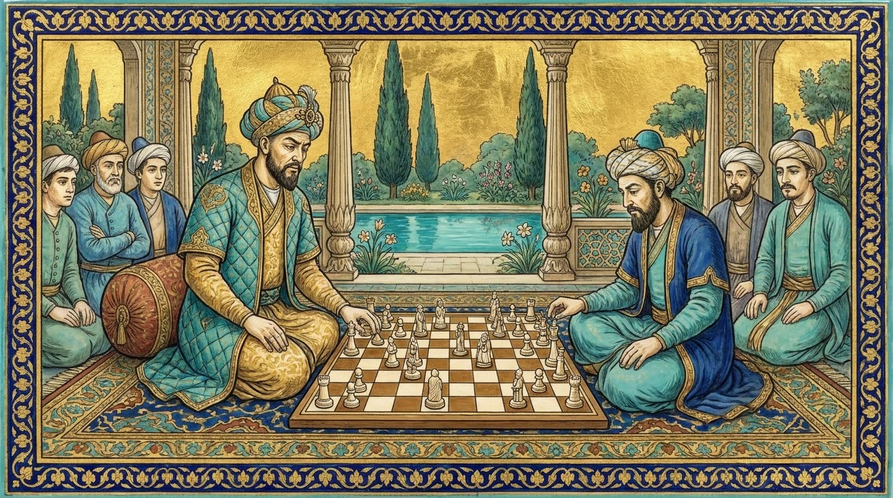

沙哈鲁与拜松古尔的赫拉特
帖木儿王朝的第二都城：赫拉特细密画派在此诞生，沙特兰兹棋手在此被绘入画中。

帖木儿于1380年攻取赫拉特，1397年任命幼子沙哈鲁为总督——就是那位传说中在一局棋之间出生的沙哈鲁。帖木儿去世后，沙哈鲁与妻子高哈尔·沙德于1405年把都城从撒马尔罕迁到赫拉特。高哈尔·沙德大兴土木：马什哈德的清真寺（1418），赫拉特的穆萨拉建筑群和经学院——她的陵墓就在那里。丈夫于1447年去世后，她以孙辈的名义统治了约十年，直到1457年，年过八旬的她被苏丹阿布·赛义德下令处死。
拜松古尔的书坊
沙哈鲁之子拜松古尔（1397–1433）本人是出色的书法家，他在赫拉特聚集了一座书籍作坊——基塔布哈纳：1421年攻取大不里士后，他把此前为札剌亦儿王朝效力的画家和书法家带到赫拉特，与设拉子的匠师合在一起。这座作坊的最高成就是1430年1月31日完成、现藏德黑兰古列斯坦宫的拜松古尔《列王纪》；它已被联合国教科文组织列入“世界记忆”名录。在同为1430年的波斯细密画中，还有一幅描绘两位沙特兰兹棋手。
鼎盛
在苏丹侯赛因·拜卡拉（1469–1506年在位）及其维齐尔、诗人阿利舍尔·纳沃伊的时代，赫拉特成为东方最辉煌的城市：诗人贾米在此写作，被视为波斯绘画巅峰的细密画家卡马勒丁·比赫扎德在此工作。我们的藏书室房间和百科全书中的彩绘图画，是向这座赫拉特作坊的致敬。